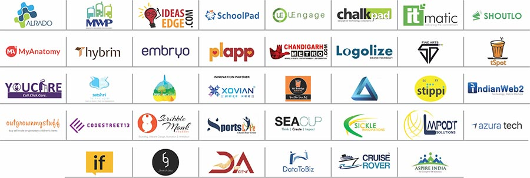

CHITKARA
UNIVERSITY

give a miss call on
1800 267 1999
Admission Helpline
+91 9501105714
+91 9501105715
please call on
9599368734
Helpline
9810355724
Helpline
9873288076
J&K Helpline
9501105716
|
CHITKARA
UNIVERSITY |
|
For more information give a miss call on 1800 267 1999 |
Admission Helpline +91 9501105714 +91 9501105715 |
Delhi & NCR
please call on 9599368734 |
WB / North East
Helpline 9810355724 |
UP / Bihar / Jharkhand
Helpline 9873288076 |
J&K Helpline 9501105716 |
Chitkara Innovation Incubator was initiated in the year 2013 with a sprawling 15,000 sq ft facility next to Rajiv Gandhi Information Technology Park, Chandigarh which is the prime destination for major blue chip companies such as Infosys, Tech Mahindra and Airtel.
Chitkara University is a place of original thinkers; nurturing and stimulating inquisitive minds to produce graduates with innovative ideas, perspective, and approaches. Now anyone can incubation space in Chandigarh or Tricity for running its startup. Chitkara Innovation Incubator helps turn students’ business ideas into reality. Student ventures with scalable, commercial potential are given access to high-tech, collaborative office space, paired with industry mentors, subject matter experts, and community corporate partners to develop scalable business plans, and market-testable products and services.
This Innovation Hub will be one-stop shop for know-how. Entrepreneurs across Chitkara University can access seed capital opportunities, one-on-one mentoring, pro-bono support services, feedback from entrepreneurial experts, and capacity-building workshops covering everything from legal liability to effective marketing to entrepreneurial finance. It is a community, a nexus point where innovators at Chitkara can meet, interact with other innovators, and learn from peers, all of whom are driven to create lasting positive change. That community includes undergraduate and graduate students, faculty, staff and alumni across any discipline.
SOME OF THE COMPANIES WHICH ARE SUPPORTED BY CHITKARA INNOVATION INCUBATOR ARE:
